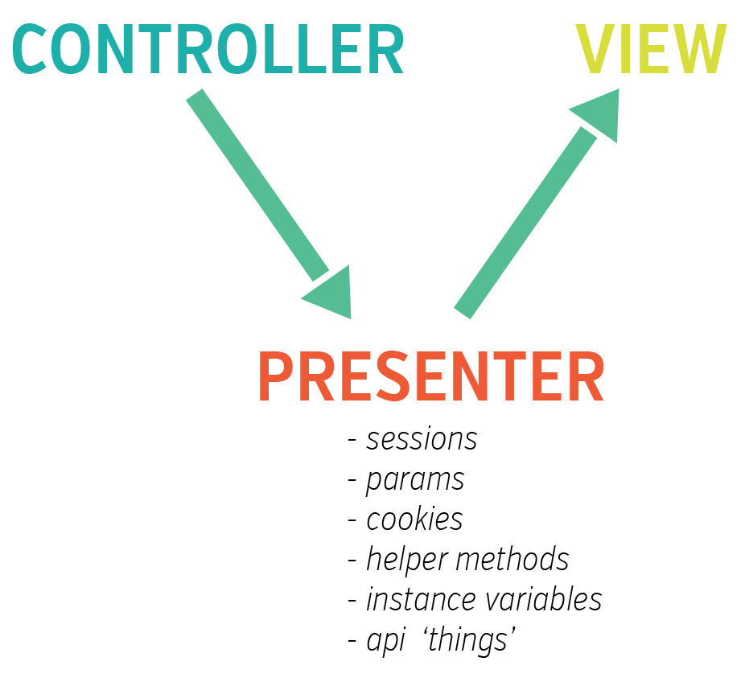

rails
Jan 2015
Concerns
DHH use is the way of injecting both instance and class methods at the same time.
More than a tweet. Less than a Post. Sometimes a doodle.
My favorites.
click.
 sd_233.png
sd_233.png /sd_0.jpg
/sd_0.jpg /sd_1.jpg
/sd_1.jpg /sd_2.jpg
/sd_2.jpgThoughts, Feeling, Actions in words.
When you find yourself in the situation that your view needs content from several places then consider a Presenter instead of polluting your view or controller.

In Rails, in order to access your model's attributes...

Learning to code is a roller coaster ride. I start new projects with a high sense of excitement and Active engagement. It's not long before I zip down into a state of ignorance. My ignorance converts into introversion and analysis, which turns me...
I've been a developer at LivingSocial for a year now. It's my first corporate, full time software job. During that time, my primary focus was getting acclimated to the code base, writing code, and working to get better as a developer. In short, I had...
Things I learn from the real programmers.
Jan 2015
DHH use is the way of injecting both instance and class methods at the same time.
Jan 2015
Each of these is used for different purposes.
Jan 2015
Hit a bug when VCR cassette was not recording. So, we
- opened rails console
- require 'vcr'
- ran the vcr setup helper
- and ran command to get the record command.
- This added the cassette but it had one more issue with the URL being off.
- Updated the url and the test passed.
Words I want my Boys to know.
Jan 2015
Jan 2015
Jan 2015
Save for later.
Jan 2015
Jan 2015
Jan 2015
I love to read. A list of books I've read over the years.
Jan 2015
I bought this book in 2011. Funny thing is I've tried to read it a few times but it's been over my head for various reasons. I started reading yesterday and while it's 8 years old, it covers many of the core fundamentals in a very cohesive way. I would recommend this book to anyone.
site amazonJan 2015
AKA the Pick Axe book. Starting my fourth read because I learn something new each time.
site pragprogAug 2018
looking.
Jan 2015
Jan 2015
Jan 2015
Super?